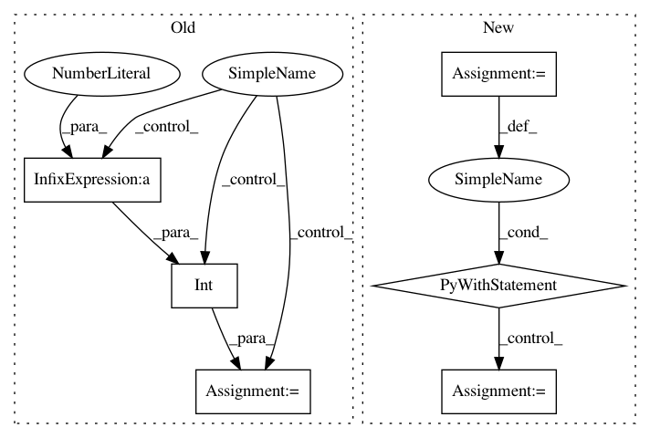

4a432c5225262f26517776aa865c4c8428d808ad,pynets/plotting/plot_graphs.py,,plot_conn_mat,#Any#Any#Any#Any#Any#Any#,17
Before Change
print("Connectivity matrix too sparse for plotting...")
if len(labels) > 150:
tick_interval = int(np.around(len(labels)/50))
else:
tick_interval = int(np.around(len(labels)))
plt.axes().yaxis.set_major_locator(mticker.MultipleLocator(tick_interval))
plt.axes().xaxis.set_major_locator(mticker.MultipleLocator(tick_interval))
After Change
conn_matrix_bin = thresholding.binarize(conn_matrix)
conn_matrix_plt = np.nan_to_num(np.multiply(conn_matrix, conn_matrix_bin))
with open(
pkg_resources.resource_filename("pynets", "runconfig.yaml"), "r"
) as stream:
hardcoded_params = yaml.load(stream)
try:
labeling_atlas = hardcoded_params["plotting"]["labeling_atlas"][0]
except KeyError:
print(
"ERROR: Plotting configuration not successfully extracted from"
" runconfig.yaml"
)
sys.exit(0)
stream.close()
labels = [i[0][labeling_atlas] for i in labels]
In pattern: SUPERPATTERN
Frequency: 3
Non-data size: 6
Instances
Project Name: dPys/PyNets
Commit Name: 4a432c5225262f26517776aa865c4c8428d808ad
Time: 2020-07-22
Author: dpisner@utexas.edu
File Name: pynets/plotting/plot_graphs.py
Class Name:
Method Name: plot_conn_mat
Project Name: dPys/PyNets
Commit Name: 4a432c5225262f26517776aa865c4c8428d808ad
Time: 2020-07-22
Author: dpisner@utexas.edu
File Name: pynets/plotting/plot_graphs.py
Class Name:
Method Name: plot_community_conn_mat
Project Name: stellargraph/stellargraph
Commit Name: e78ff4e8d17073979c997576faf94cec3d4e0152
Time: 2018-09-09
Author: docherty@gmail.com
File Name: tests/data/test_node_splitter.py
Class Name:
Method Name: test_split_function_node_type